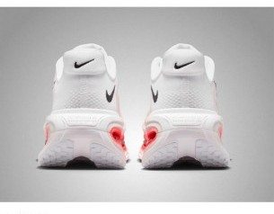
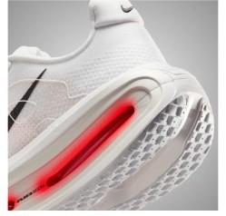

DAILY｜最厚クッション
クッションは、67足で一番。
かかとの衝撃吸収173SAは、デイリー部門67足で最も高い。性能点4.36もデイリーの1位である。その代わり実測326gは67足で2番目に重く、価格は¥29,700。重さと値段を受け入れられるかで評価が分かれる。
脚を守ることを最優先する人。ゆっくりのジョグやリカバリーランが中心の人。かかとから着地する人。
軽い靴が好きな人。ペースを上げる練習にも使いたい人。価格を抑えたい人。


衝撃吸収173SAで、クッションは5点。かかとの幅は103.2mmと広く、ヒール剛性は4で、安定性も4.5点ある。デイリーの性能点で重みが最も大きい2項目がそろっている。
326gは67足で2番目に重く、軽さは1.5点。ただしデイリーの性能点では軽さの重みは小さく、総合の順位にはあまり響いていない。
前足部のエネルギーリターンは64.4%で、67足中16位。重さと合わせたスピードの点は2.5である。
5点満点。計測値を当サイトのルールで点数にしたもの。
クッション5.0、安定性4.5、耐久性4.5。デイリーで重視する項目がそろって高い。軽さ1.5とスピード2.5が低いのは、この靴の性格どおりである。
高いほど衝撃をやわらげる。
摩耗深度から推定した寿命で計算。短いほど安い。
| ボメロ プレミアム | モア v5 | ボメロ プラス | ペガサス プレミアム | |
|---|---|---|---|---|
| 価格 | ¥29,700 | ¥19,800 | ¥22,000 | ¥29,700 |
| 実測重量 | 326g | 308g | 289g | 308g |
| 衝撃吸収（SA） | 173 | 156 | 147 | 155 |
| エネルギーリターン前足部 | 64.4% | 56.6% | 68.8% | 68.3% |
| 摩擦係数 | 0.50 | 0.55 | 0.52 | 0.49 |
| 摩耗深度 | 0.7mm | 0.7mm | 0.8mm | 1.0mm |
| 性能点 | 4.36 | 4.25 | 4.00 | 3.99 |
| コスパ点 | 3.5 | 4.5 | 4 | 2.5 |
モア v5は衝撃吸収で17低いが、¥9,900安く、1kmあたりも約14円安い。同じナイキのボメロ プラスは37g軽く、反発も高い。ペガサス プレミアムとは同じ価格だが、衝撃吸収、摩耗の少なさ、性能点のすべてでボメロ プレミアムが上回る。
ドロップは10mmで、かかとが高い。曲げ剛性21.5Nは67足で2番目に硬く、靴底があまり曲がらない。摩擦係数は0.50で、グリップは中程度。摩耗深度は0.7mmで、推定寿命は約700kmある。
実測326g（US9）は、サイトの掲載値370gと差がある。どちらにしても重い部類なので、試し履きでは重さが気にならないかを確かめたい。ドロップは10mmあり、低いドロップの靴から替える人は違いを感じやすい。
久しぶりに走る日や、疲れが残る日に脚を守りたい人に向く。週15kmなら約11か月で、買い替えの目安の700kmに届く。距離の少ない人ほど、1kmあたりの高さは気になりにくい。
デイリー部門で最もクッションが厚く、性能点も1位。重さと価格を受け入れられて、脚を守ることを優先する人が選ぶ靴である。
※本記事は海外ラボ（RunRepeat）の計測データとメーカー公表値、当サイトの計算をもとにした分析です。計測はUS9（約27cm）です。1kmあたりの費用は摩耗深度から推定した寿命での概算です。価格は当サイトの掲載値で、変更されている場合があります。